I'm currently a second-year master student majored in computer technology at the School of Computer Science and Technology, Xi'an Jiaotong University (XJTU), supervised by Prof. Heli Sun. My research interest lies in deep learning and multi-media computing, primarily focusing on large-scale self-supervised video understanding, multi-modal large langugae models (MLLMs), and misinfo detection (Deepfake & AIGC).
Prior to that, I recevied my B.E. degree at the School of Cyber Science and Engineering, Zhengzhou University (ZZU), where I worked closely with Prof. Junxiao Xue (PI, Zhejiang Lab) and Prof. Lei Shi (Vice Dean). Besides, as a student PI, I have led the eMotionAI Lab of Zhengzhou University Students innovative Entrepreneurial Base (North Campus) from 2021 to 2023.
Please feel free to contact me if you are interested in my works and want to explore potential collaborations 🙌.
Video Understanding: Multi-modal self-supervised learning
Multi-modal Large Language Models (MLLMs): Human-centric, Unified understanding and generation, and CoT reasoning
Misinfo Detection: Deepfake and AIGC detection
📢News
[08/2025] Eight paper are submitted to AAAI'26.
[07/2025] One paper is accepted by MM'25 SVC Workshop!
[07/2025] One paper is submitted to IEEE TCSVT.
[07/2025] One paper is submitted to MM'25 SVC Workshop.
[07/2025] One paper is submitted to IEEE TCSVT.
[07/2025] Two papers are accepted by ACM MM'25!
[06/2025] One paper is accpeted by IEEE SMC'25!
[06/2025] One paper is submitted to Big Data Mining and Analytics.
[06/2025] Served as a reviewer for EMNLP'25.
[06/2025] One paper is submitted to ACM MM'25 Grand Challenge.
[05/2025] One paper is submitted to Intelligent Computing.
[05/2025] One paper is submitted to EMNLP'25.
[05/2025] Four papers are submitted to NeurIPS'25.
[05/2025] Served as a reviewer for ACM MM'25.
[04/2025] One paper is accpeted by Big Data Mining and Analytics!
[04/2025] Three papers are accepted by ACM ICMR'25!
[04/2025] Five papers are submitted to ACM MM'25.
[04/2025] One paper is accepted by CVPR'25 NTIRE Challenge!
[04/2025] Three papers are accepted by IJCNN'25!
[03/2025] One paper is submitted to IEEE SMC'25.
[03/2025] One paper is submitted to CVPR'25 NTIRE Challenge.
[03/2025] One paper is submitted to ICCV'25🎈.
[02/2025] Two papers are accepted by CVPR'25!
[02/2025] Three papers are submitted to ICMR'25.
[01/2025] One paper is submitted to IJCAI'25🎈.
[01/2025] Three papers are submitted to IJCNN'25.
[12/2024] One paper is submitted to ACL'25.
[12/2024] Three papers are submitted to ICME'25🎈.
[11/2024] Five papers are submitted to CVPR'25.
[11/2024] One paper is submitted to Big Data Mining and Analytics.
[11/2024] Served as a reviewer for CVPR'25.
[10/2024] Served as a reviewer for WWW'25.
[10/2024] One paper is submitted to WWW'25🎈.
[09/2024] One paper is submitted to ICASSP'25🎈.
[08/2024] One paper is submitted to AAAI'25🎈.
[08/2024] One paper is accpeted by Big Data Mining and Analytics!
[07/2024] One paper is accpeted by ACM MM'24!
[05/2024] Served as a reviewer for NeurIPS'24.
[03/2024] Served as a reviewer for ACM MM'24.
😘Experience
Research Intern | Data-Douyin, ByteDance
Period: 04/2025 - Present. Mentor: Dingkang Yang & Xiao Liang
Research Intern | Multi-modal Evaluation Group, Foundation LMMs Team
Period: 01/2025 - Present. Mentor: Jiaxing Liu & Xiaoyu Li
Member | Data Intelligence and Social Governance Lab, Xi'an Jiaotong University
Period: 09/2023 - Present. Supervisor: Prof. Heli Sun
Visiting Stundent | State Key Laboratory of Communication Content Cognition
Period: 10/2023 - 10/2024. Supervisor: Prof. Heli Sun
Student PI | eMotionAI Lab, Zhengzhou University
Period: 06/2021 - 06/2023. Advisor: Prof. Junxiao Xue
Research Assistant | Machine Vision Lab, Zhengzhou University
Period: 06/2021 - 09/2021. Supervisor: Prof. Jianhong Ma
Research Assistant | Computational Learning Lab, Zhengzhou University
Period: 09/2020 - 06/2023. Supervisor: Prof. Junxiao Xue
😍 Selected Works
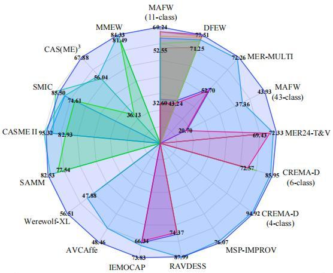
AVF-MAE++: Scaling Affective Video Facial Masked Autoencoders via Efficient Audio-Visual Self-Supervised Learning Xuecheng Wu, Heli Sun†, Yifan Wang, Jiayu Nie, Jie Zhang, Yabing Wang, Junxiao Xue, Liang He IEEE/CVF CVPR, 2025 [Paper][Code]Poster
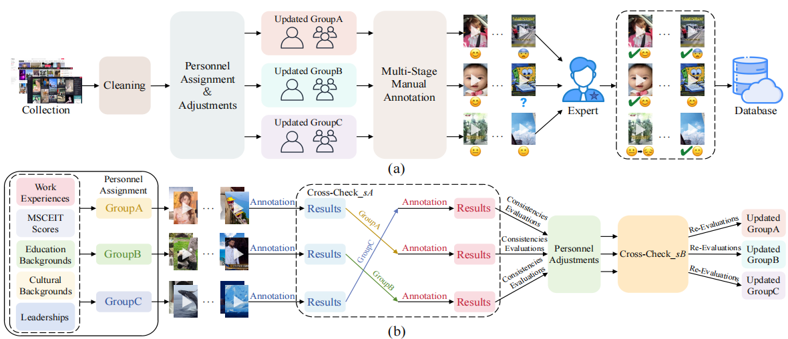
Towards Emotion Analysis in Short-form Videos: A Large-Scale Dataset and Baseline Xuecheng Wu, Heli Sun†, Junxiao Xue, Jiayu Nie, Xiangyan Kong, Ruofan Zhai, Liang He ACM ICMR, 2025 [Paper][Code]
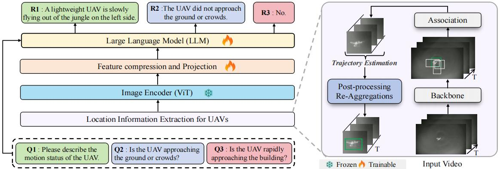
JTD-UAV: MLLM-Enhanced Joint Tracking and Description Framework for Anti-UAV Systems
Yifan Wang*, Jian Zhao*, Zhaoxin Fan†, Xin Zhang, Xuecheng Wu, Yudian Zhang, Lei Jin, Xinyue Li, Gang Wang†, Mengxi Jia, Ping Hu, Zheng Zhu, Xuelong Li IEEE/CVF CVPR, 2025 [Paper]Poster
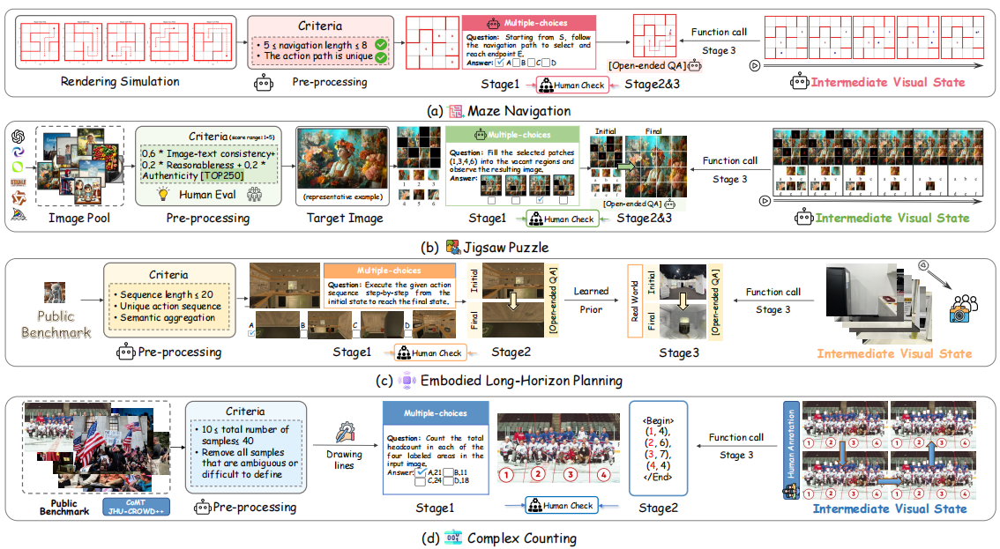
ViC-Bench: Benchmarking Visual-Interleaved Chain-of-Thought Capability in MLLMs with Free-Style Intermediate State Representations Xuecheng Wu*, Jiaxing Liu*, Heli Sun†, Danlei Huang, Xiaoyu Li†, Yifan Wang, Chen Chen, Liya Ma, Xuezhi Cao, Junxiao Xue, Liang He arXiv, 2025 [Paper][Dataset]
3A-YOLO: New Real-time Object Detectors with Triple Discriminative Awareness and Coordinated Representations Xuecheng Wu*, Junxiao Xue*†, Liangyu Fu, Jiayu Nie, Danlei Huang, Xinyi Yin IEEE SMC, 2025 [Paper]
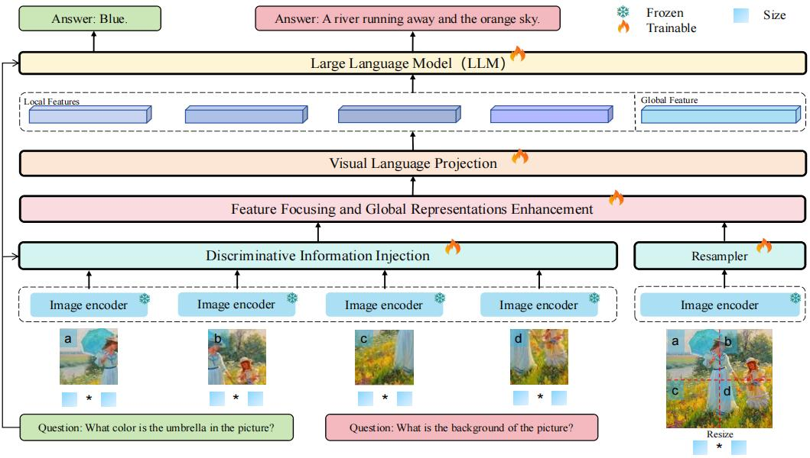
Magnifier: A Pluggable Framework for Enhanced High-Resolution Image Comprehension in Multi-modal Large Language Models
Yifan Wang, Yunfei Wu, Xin Li†, Xuecheng Wu, Wentao Zhang, Haoyu Cao, Yinsong Liu, Deqiang Jiang, Xing Sun, Feiyue Huang† Under Review, 2025
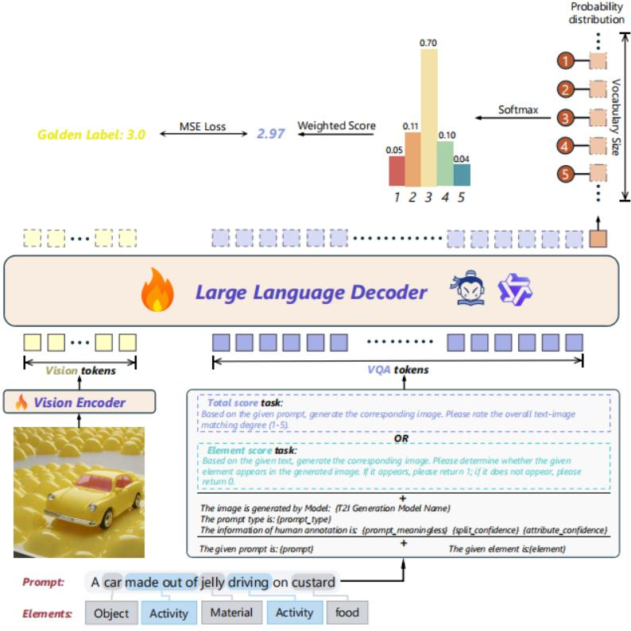
TokenFocus-VQA: Enhancing Text-to-Image Evaluation with Position-Specific Probability Loss and Multi-Perspective Aggregations on LVLMs
Zijian Zhang, Xunhui Zheng, Xuecheng Wu, Chong Peng†, Xuezhi Cao IEEE/CVF CVPRW, 2025 [Paper]
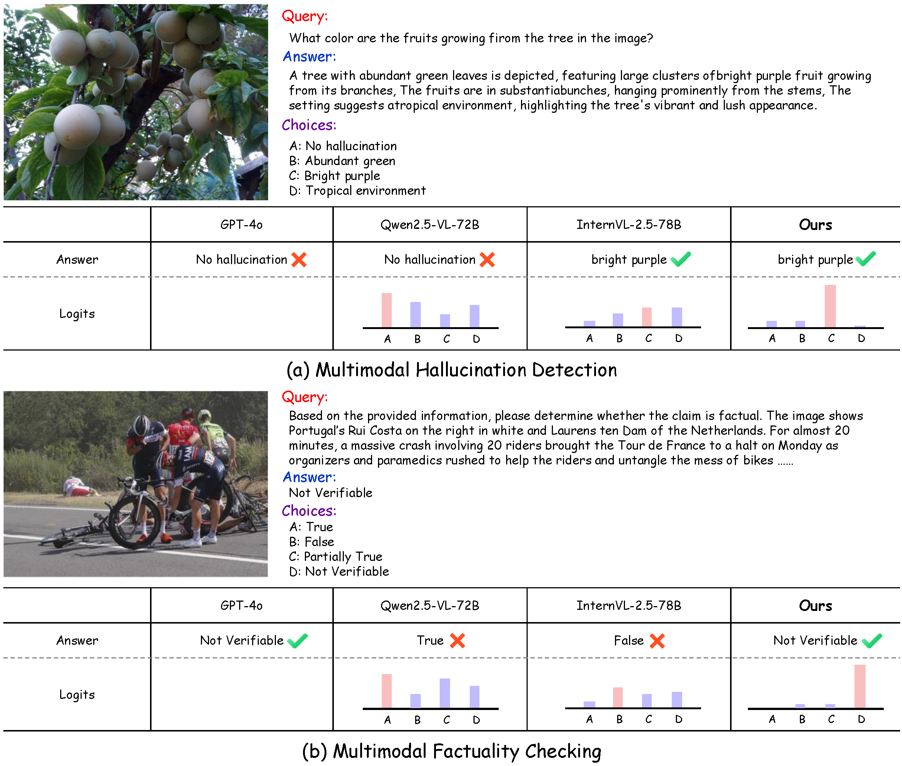
HKD4VLM: A Progressive Hybrid Knowledge Distillation Framework for Robust Multimodal Hallucination and Factuality Detection in VLMs
Zijian Zhang*, Xuecheng Wu*, Danlei Huang, Siyu Yan, Chong Peng†, Xuezhi Cao (*: Equal Contribution.) Under Review, 2025
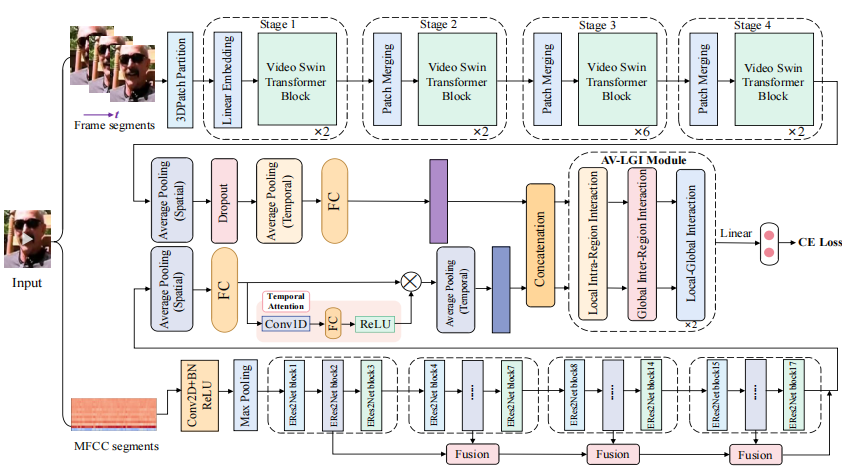
Building Robust Video-Level Deepfake Detection via Audio-Visual Local-Global Interactions
Yifan Wang*, Xuecheng Wu*, Jia Zhang, Mohan Jing, Keda Lu, Jun Yu†, Wen Su, Fang Gao, Qingsong Liu, Jianqing Sun, Jiaen Liang (*: Equal Contribution and Radom Order.) ACM International Conference on Multimedia (MM), 2024 [Paper]
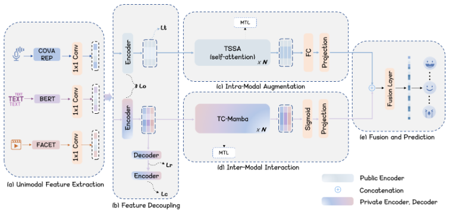
DDSE: A Decoupled Dual-Stream Enhanced Framework for Multimodal Sentiment Analysis with Text-Centric SSM
Shenjie Jiang, Zhuoyu Wang, Xuecheng Wu, Hongru Ji, Mingxin Li, Xianghua Li, Chao Gao ACM MM, 2025
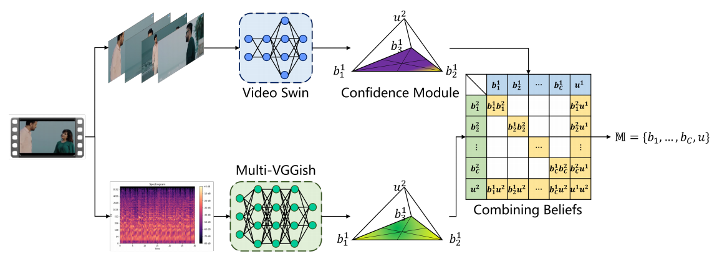
A Trustworthy Method for Multimodal Emotion Recognition
Junxiao Xue, Xiaozhen Liu†, Jie Wang, Xuecheng Wu, Bin Wu Big Data Mining and Analytics, 2025
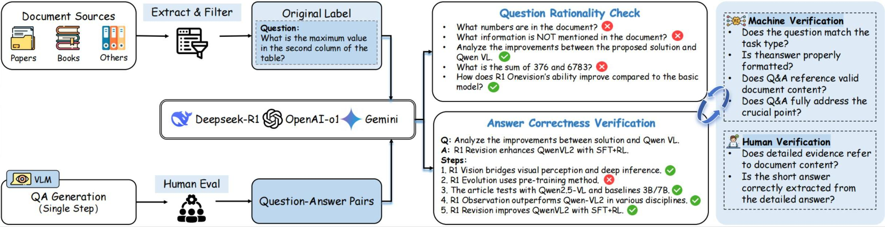
LR-Doc: Benchmarking and Advancing Long Document Reasoning in MLLMs with Learned Priors
Yifan Wang*, Xuecheng Wu*, Danlei Huang, Zhaoxin Fan†, Xinyi Yin, Tingqi Hu, Yang Xiao, Zhe Gao, Jun Xie, Xin Fu, Liang Xie† Under Review, 2025
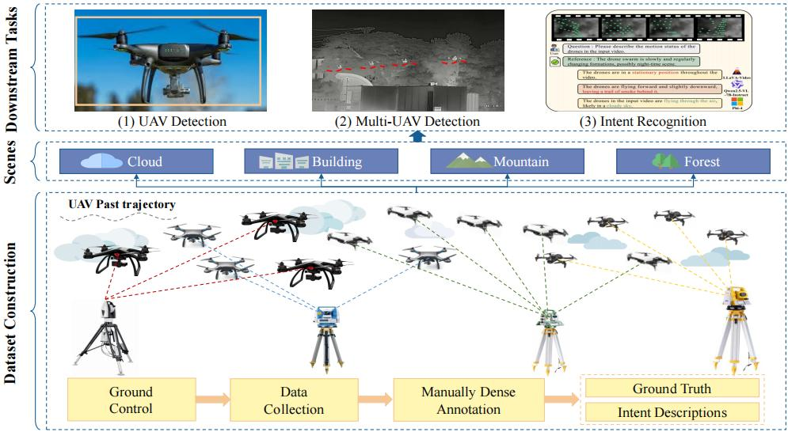
MM-AntiUAV: A Comprehensive Benchmark for Multi-UAV Tracking and Intent Recognition
Yifan Wang*, Jian Zhao*, Xuecheng Wu, Xin Zhang, Danlei Huang, Zhaoxin Fan†, Gang Wang†, Lei Jin, Jianan Li, Xuelong Li Under Review, 2025
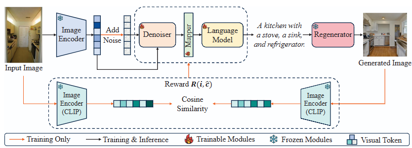
DSACap: Enhancing Visual-Semantic Alignment with Diffusion-based Framework for Image Captioning
Liangyu Fu, Junbo Wang, Yuke Li, Qiangguo Jin, Hongsong Wang, Ya Jing, Linjiang Huang, Liang Yao, Jiangbin Zheng, Xuecheng Wu, Zhiyong Wang ACM MM, 2025
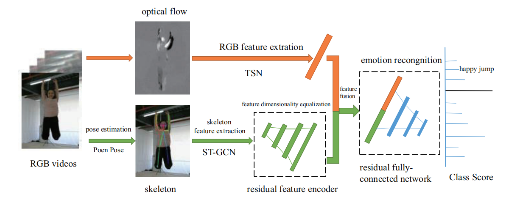
Affective Video Content Analysis: Decade Review and New Perspectives
Junxiao Xue, Jie Wang†, Xiaozhen Liu, Qian Zhang, Xuecheng Wu Big Data Mining and Analytics,2024 [Paper]
TACR-YOLO: A Real-time Detection Framework for Abnormal Human Behaviors Enhanced with Coordinate and Task-Aware Representations
Xinyi Yin, Wenbo Yuan, Xuecheng Wu†, Liangyu Fu, Danlei Huang IJCNN, 2025
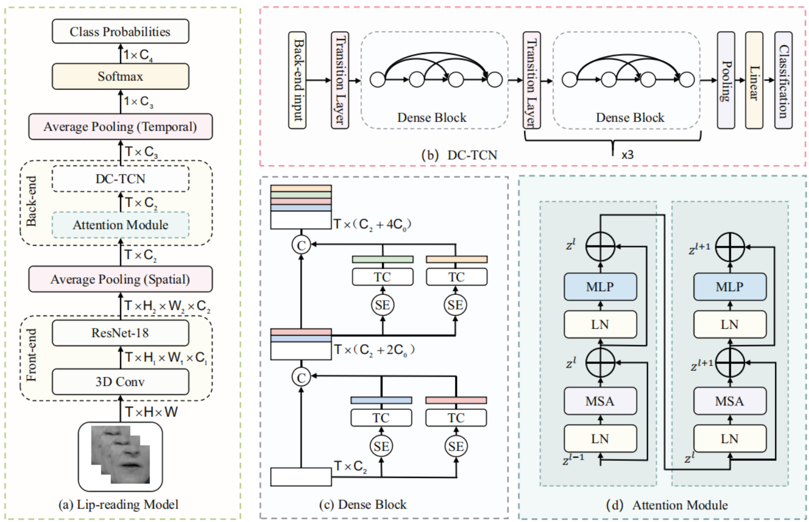
InfoSyncNet: Information Synchronization Temporal Convolutional Network for Visual Speech Recognition
Junxiao Xue, Xiaozhen Liu†, Xuecheng Wu, Fei Yu, Jun Wang IJCNN, 2025
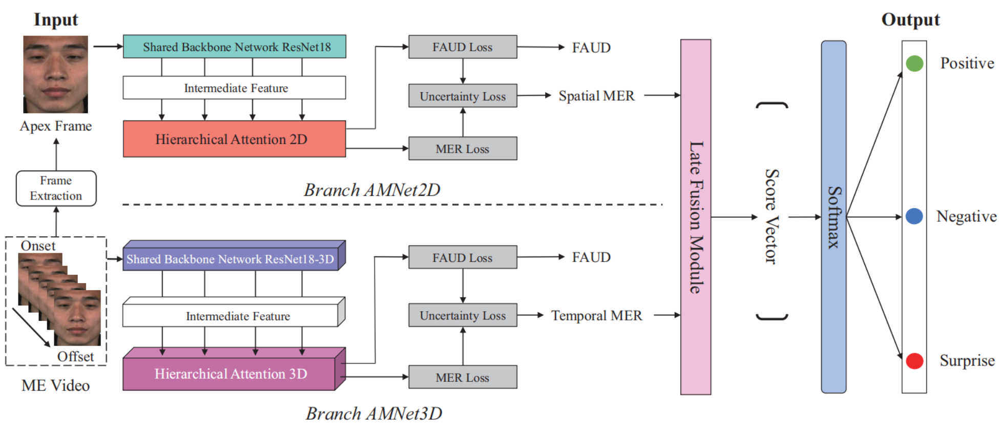
FAMNet: Integrating 2D and 3D Features for Micro-expression Recognition via Multi-task Learning and Hierarchical Attention
Liangyu Fu, Xuecheng Wu†, Danlei Huang, Xinyi Yin IJCNN, 2025
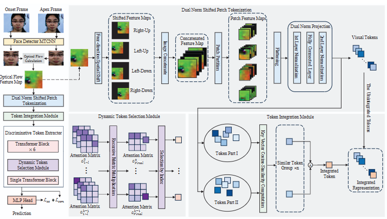
EPIR: An Efficient Patch Tokenization, Integration and Representation Framework for Micro-expression Recognition
Liangyu Fu, Junbo Wang, Yuke Li, Yining Zhu, Hongsong Wang, Xuecheng Wu, Kun Hu IEEE TCSVT'25, Under Review
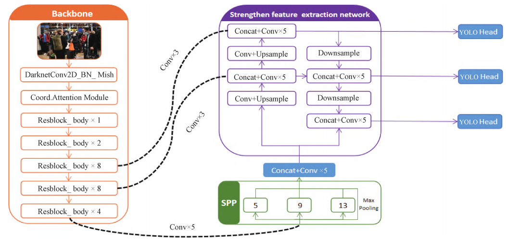
A Method on Mask Wearing Detection of Natural Population Based on Improved YOLOv4
Junxiao Xue*, Xuecheng Wu*, Shihao Wang, Mengmeng Tian, Lei Shi† Journal of Zhengzhou University (Engineering Science), 2022 [Paper]
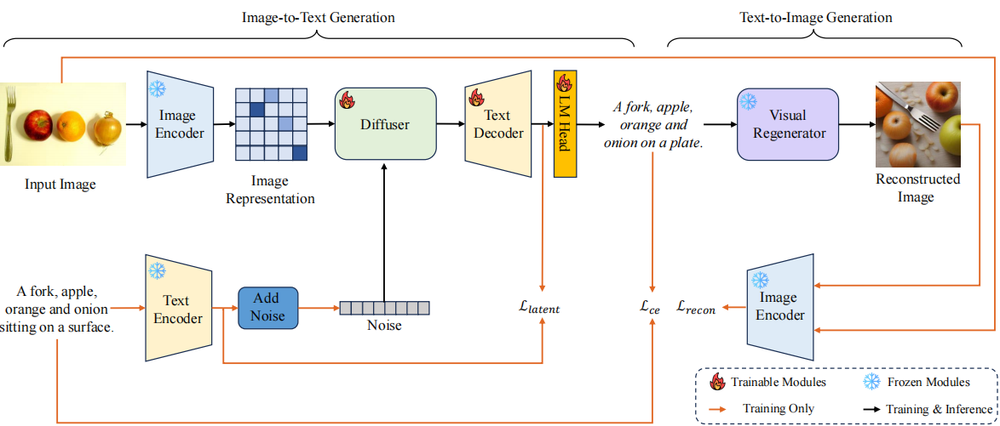
MirrorDiff: Learning Mirror Diffusion for Image Captioning via Regeneration
Junbo Wang, Liangyu Fu, Yining Zhu, Qiangguo Jin, Hongsong Wang, Yuke Li, Xuecheng Wu, Kun Hu† ACM ICMR, 2025
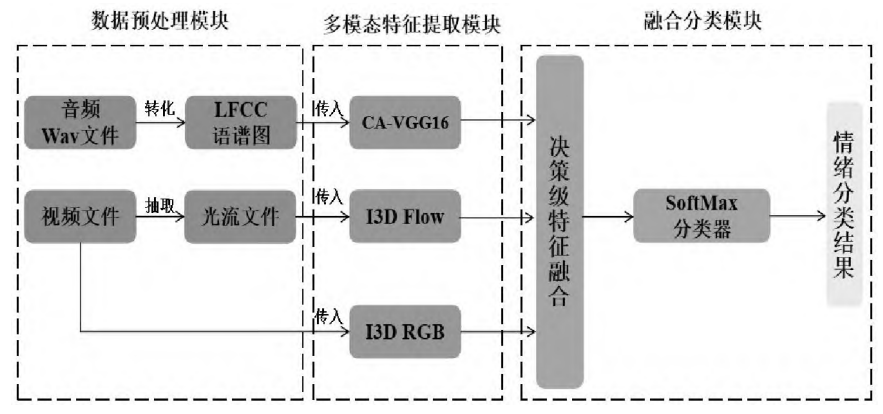
ICVNet: A Method on Cross-modal Fusion of Short Video Emotion Recognition
Junxiao Xue*, Xuecheng Wu*, Qian Zhang, Mengmeng Tian, Lanhang Zhai, Lei Shi† Chinese Journal of Ergonomics, 2022 [Paper]
Conference Reviewer for
1. IEEE/CVF Conference on Computer Vision and Pattern Recognition (CVPR)
2. IEEE/CVF International Conference on Computer Vision (ICCV)
3. The Annual Conference on Neural Information Processing Systems (NeurIPS)
4. ACM The Web Conference (WWW)
5. CAAI International Conference on Artificial Intelligence (CICAI)
6. ACM International Conference on Multimedia (MM)
7. IEEE International Conference on Multimedia & Expo (ICME)
8. IEEE BigData
9. International Joint Conference on Neural Networks (IJCNN)
10. IEEE International Conference on Advanced Visual and Signal-Based Systems (AVSS)
11. IEEE International Conference on Systems, Man, and Cybernetics (SMC)
12. Empirical Methods in Natural Language Processing (EMNLP)
Journal Reviewer for
1. IEEE Transactions on Multimedia (TMM)
2. Knowledge-based Systems (KBS)
3. IEEE Transactions on Knowledge and Data Engineering (TKDE)
4. Intelligent Computing
5. ACM Transactions on Multimedia Computing Communications and Applications (TOMM)
🥳Kind Assistance
As a native student from Henan Province, I am deeply eager to make impacts on the developments of students at my alma mater, Zhengzhou University. I have successfully guided excellent undergraduates from our eMotionAI Lab to enter the graduate study phase through the recommendation-based exemption or entrance examination.
The detailed information is listed as follows:
2024 Year Entrance. Liangyu Fu (Northwestern Polytechnical University), Mengli Dai (Harbin Institute of Technology), Qian Zhang (National University of Defense Technology), Rui Wang (Zhengzhou University).
2025 Year Entrance. Jie Li (University of Science and Technology of China), Puhao Liu (Northwestern Polytechnical University), Wenbo Yuan (Xidian University), Mengjia Wang (Zhengzhou University), Qi Zhang (Xi'an Jiaotong University), Liduo Wang (Renmin University of China).